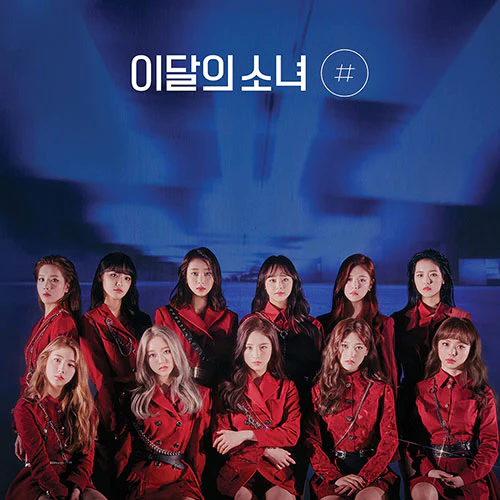
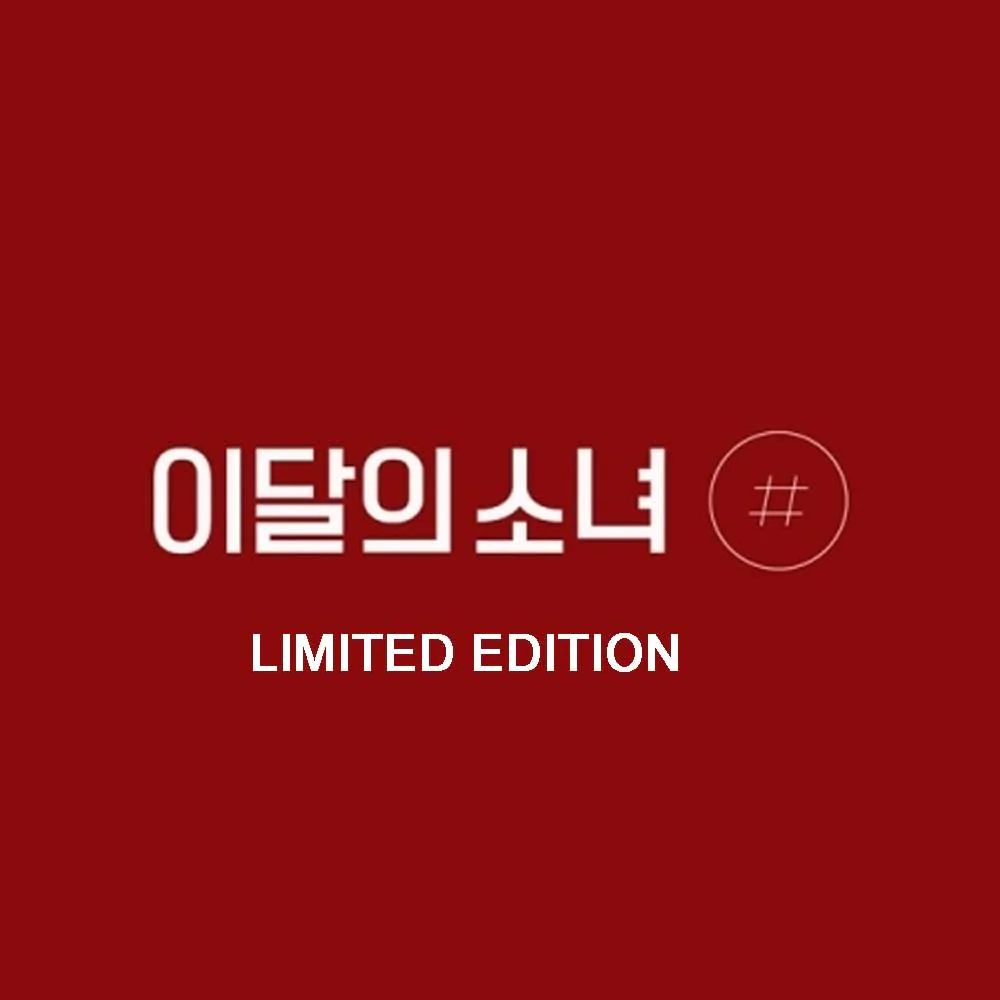

Flip That
Released June 2022
Group Members:
Kim Lip: Vocalist and Dancer
Go Won: Vocalist and Dancer
Olivia Hye: Vocalist, Dancer, and Rapper
Flip That is the fifth extended play by South Korean girl group Loona. It was released on June 20, 2022, through Blockberry Creative and Warner Music Korea. The EP features a total of six songs and is Loona's first project since [#] to not feature a full English song. This was their final release under Blockberry Creative.


Songs
- POSE
- Need U
- Pale Blue Dot
- The Journey
- Playback
Main Singers
- Kim Lip
- Olivia Hye
- Go Won
- JinSoul
- HaSeul
In May 2021, Loona was named the new ambassadors of Korean culture abroad.
On November 25, Blockberry Creative announced that Chuu had been removed from the group, citing an "abuse of power". It had previously been reported in March that she had won a partial injunction, filed in December 2021.
On September 15, HyunJin, YeoJin, ViVi, Go Won and HyeJu re-debuted as Loossemble under CTDENM.
Heejin around flowers
Hash (EP)
Released Feb 2020
Group Members:
Chuu: Vocalist and Rapper
HeeJin: Visual and Rapper
ViVi: Vocalist and Rapper
[#] debuted at No. 4 on Billboard's World Albums chart, tying their highest position on the tally to date with their previous two EPs, while earning 3,000 units in the week ending February 6, which marks their best sales week in America. On March 12, 2020, Loona received their first music show win on Mnet's M Countdown with "So What".
 Songs
- So What
- Number 1
- 365
- Ding Ding Dong
- #
Main Singers
- Yves
- Choerry
- YeoJin
- HaSeul
- HyunJin
It was announced on January 7, 2020 via Fancafe that HaSeul would not be participating in promotions for this album due to mental health concerns.
Through this album, Loona is about to show the whole different confident, challenging Loona, not the same Loona people all know.
On December 13, 2019, LOONA released digital single “365” as a thank you to fans for waiting so long for the group's return.
Hash track list
Incomplete website. Only for teaching purposes. Malmö university